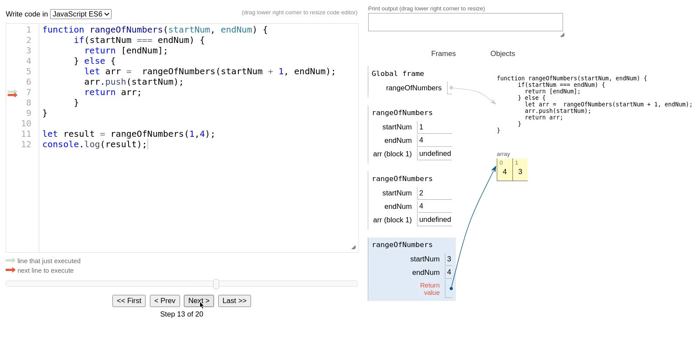

RECURSION
Table of Contents
1 Use Recursion to Create a Range of Numbers, FAQ
1.1 Code
function rangeOfNumbers(startNum, endNum) { if(startNum === endNum) { return [endNum]; } else { let arr = rangeOfNumbers(startNum + 1, endNum); arr.push(startNum); return arr; } } let result = rangeOfNumbers(1,4); console.log(result);
[ 4, 3, 2, 1 ]
1.2 Step By Step
Step 1
Step 2

Step 3
Step 4
Step 5
Step 6
Step 7
Step 8
Step 9

Step 10
Step 11
Step 12
Step 13

Step 14
Step 15
Step 16

Step 17
Step 18
Step 19
Step 20
1.3 What happens when the base case is evaluated as false?
The function calls itself: Steps: 4,6,8


1.4 What happens when the base case is evaluated as true?
Returns an array: Step: 10

1.5 The Array, where does it come from?
From the base case: Step 10
1.6 Why can I push startNum to arr?
Because after the base case is evaluated as true, arr is an array: Step: 11

1.7 Why I'm Getting [4,3,2,1] ?
Because JavaScript uses a "stack" (LIFO, last in first out): Steps 10, 13, 16, 19

1.8 How can I get [1,2,3,4]?
Replace push with unshift
function rangeOfNumbers(startNum, endNum) { if(startNum === endNum) { return [endNum]; } else { let arr = rangeOfNumbers(startNum + 1, endNum); arr.unshift(startNum); // <- here return arr; } } let result = rangeOfNumbers(1,4); console.log(result);
[ 1, 2, 3, 4 ]